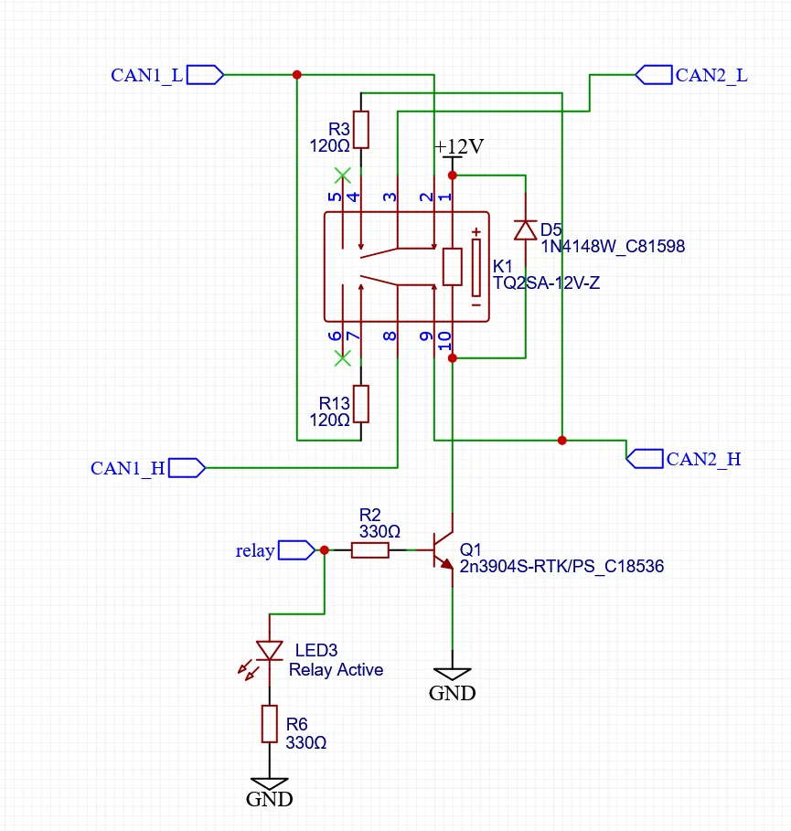

On a FIRST Robotics robot, one broken CAN wire takes down every motor. I designed a board that detects the break, splits the bus around it, and keeps the rest of the robot talking.
Application
FIRST Robotics (FRC) CAN bus
Hardware
ESP32 + two TCAN4550 CAN-FD controllers
Status
Breadboard proven on a robot; PCBs built
Firmware
AI-assisted, written with Claude
Fig 6.1: The assembled board.

Fig 6.2: The relay circuit: pass the bus through, or split it and terminate both sides.
The Problem
FRC robots command their motor controllers over a single CAN bus, daisy-chained from device to device and terminated with 120 Ω at the ends. It only works as one continuous line. If a wire breaks anywhere, the whole bus goes down and you lose every motor, not just the ones past the break. Finding the bad wire in the pits, between matches, is slow.
Without the board
With the board
Fig 6.3: One broken wire, with and without the fault isolator. More boards along the bus means less of the robot lost to any single break.
How It Works
01
A normal CAN device: The board sits on the bus like any other node and broadcasts a heartbeat. Its relay is off, so the bus passes straight through it.
02
Detecting a break: Because it's a full CAN node, it decodes every packet on the bus, including a message the roboRIO sends constantly. When it can no longer decode traffic, the bus is broken.
03
Splitting the bus: It switches the relay, which cuts the bus at the board and terminates each side with 120 Ω, so both halves work as buses on their own. Two TCAN4550 controllers let it talk on both halves at once.
04
Finding which side is broken: It listens on both halves for another board's heartbeat. If it hears one on both sides, the break isn't next to it, so it drops the termination and reconnects. If one side goes quiet, that side is the broken segment, so it stays split and keeps the healthy side running.
05
Pointing to the problem: An LED on the board flags that the break is past it, which cuts down the time spent hunting for the bad wire or motor.
The Hardware
I came up with the concept and worked out the circuit. An ESP32 talks over SPI to two TCAN4550 CAN-FD controllers, one per side of the bus. With the relay unpowered, the two CAN ports connect straight through; energized, it splits them and switches a 120 Ω termination onto each side. TVS diodes protect the CAN lines.